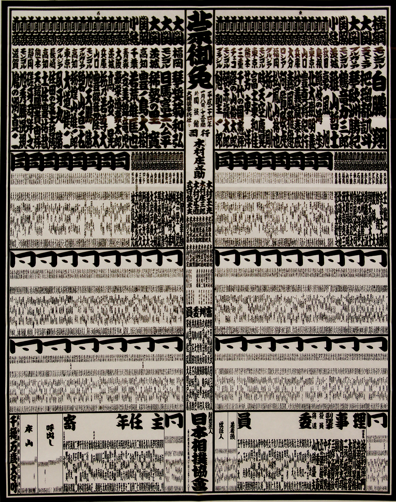
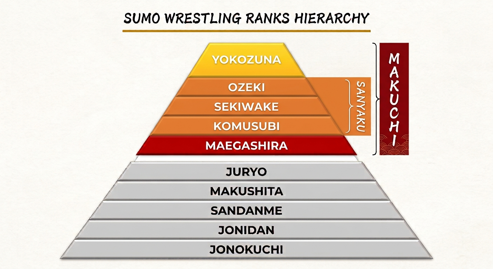
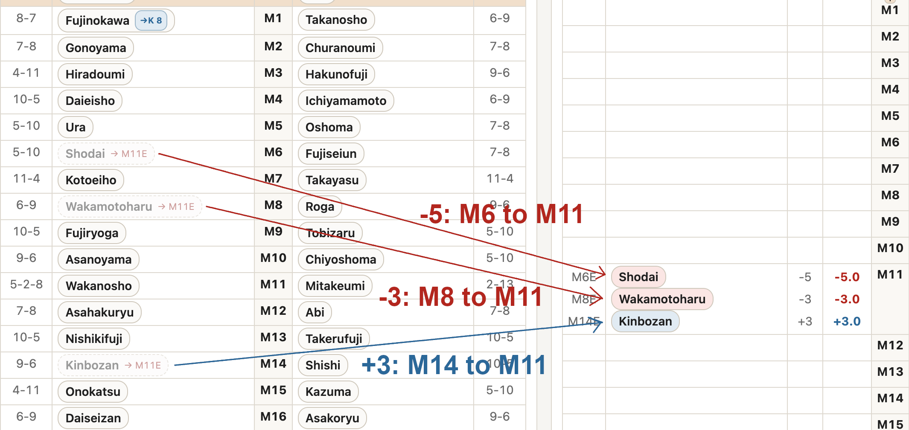
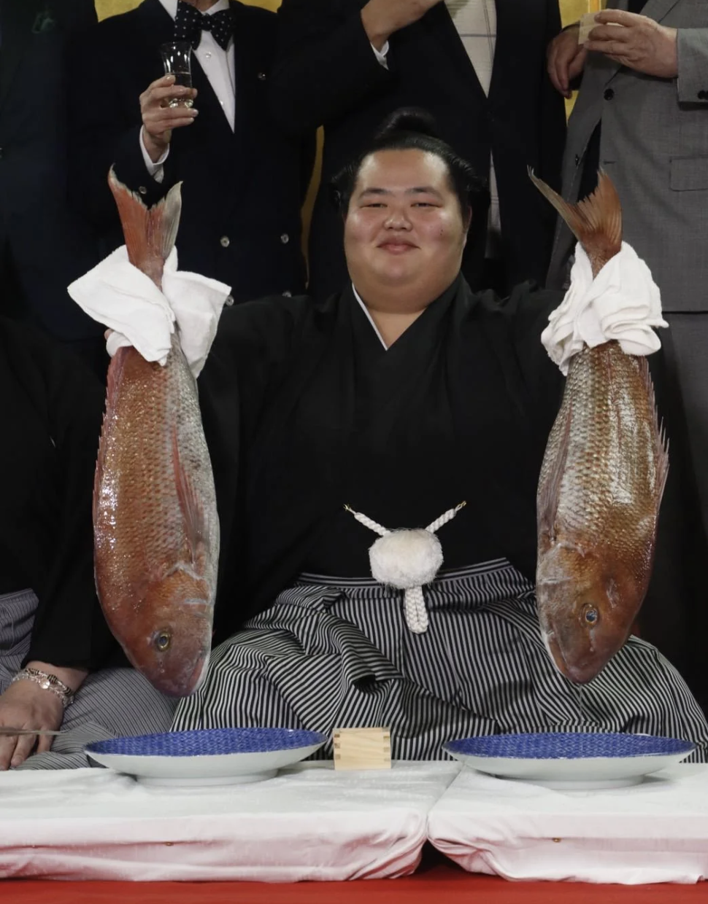

Previous Results
Next Banzuke Prediction
What is this Site?
This site is a tool to assist sumo fans playing a game where we guess what the new wrestler rankings will be after a tournament finishes. Wrestlers (called "rikishi") are all ranked from #1 on down prior to every tournament in a big list called a banzuke.
The rankings are ultimately subjective decisions by the Japanese Sumo Association. There are some general rules used however, and this app assists with calculations and highlighting information relevant to these rules, in addition to providing a convenient interface for organizing picks.
The picks made here can be copied to the Guess the Banzuke (GTB) site, which is the centralized competition. Copying can be done manually or automatically. To automatically copy your picks into GTB, drag this link to your browser's bookmarks bar: Fill GTB Form. Then in the Prediction page press "Submit Guess to GTB", click the bookmark on the GTB entry form, check the picks, and send your entry there.
This site also supports its own submissions and scoring, since your picks are already here it's just a button press. The scoring system used is slightly different from GTB.
Drag the link to your bookmarks bar instead of clicking it here; it only works on the GTB entry form.

Sumo Rankings Explained
There are 6 divisions in sumo, with most fan focus on the top division: Makuuchi. The ranks at the top of makuuchi are special "titled" ranks with their own names (yokozuna, ozeki, sekiwake, komusubi). The rest of the slots are the standard rank-and-file ranks, called maegashira, which form the bulk of the division.
Each row of the banzuke has two rikishi slots: East and West. The East slot is considered a half step up from its West slot, otherwise there's not much modern significance. Example: Maegashira 1 East > Maegashira 1 West > Maegashira 2 East.
A new banzuke is created after each tournament based on the performances of each rikishi.

The Main Rule of Rank Change
The main principle of forming the new banzuke is that if a rikishi wins more than they lose they should move up the banzuke, and if they lose more than they win they should move down the banzuke. Each rikishi has 15 bouts in a tournament, so there aren't ties (absences are treated as losses). Furthermore, the more winning you do the more you should move up, and vice versa.
So, the general calculation is that you take a rikishi's net wins in the past tournament and you ideally move up or down by that number of rows. Moving west to east / east to west is considered half a row, so a 8-7 rikishi (+1 net wins) at Maegashira #4 East (M4E) should move to Maegashira #3 East (M3E). A 5-10 rikishi (-5 net wins) at M2W should move to M7W.
However, using this system there are constantly gaps and conflicts. For example, if there's a 8-7 rikishi at M4E and a 9-6 rikishi at M5E, both of these rikishi are supposed to land at M3E. Only one rikishi can hold that slot, so it's up to the Association to decide which of them gets it and what to do with the other guy — it could be under-promotion, over-promotion, and in some cases rikishi simply stay where they already are. It can also be the case that a slot has no rikishi naturally fall into it. For example, if a rikishi should mathematically be in M2W, but there's no other rikishi available to put in M1W, they may get over-promoted to that slot to make ensure there's not a gap.

Special Rules
The more you move up the titled ranks (sanyaku) the more the normal rules start to go out the window. Below are a few of the main rules, but remember that most "rules" aren't concrete, more like guidelines, and this isn't a comprehensive list:
- Makuuchi always contains 42 rikishi. Each tournament an equal number of rikishi join from and drop down to the second highest division, Juryo.
- There must be at least 2 komusubi and 2 sekiwake. If these slots get vacated, lower rank rikishi may move up into them like normal. If these slots aren't vacated, rikishi hoping for promotion here may need to achieve a higher level of performance than normal to force a new slot open.
- In order to reach ozeki, a rikishi generally needs 33 wins across 3 consecutive tournaments at the rank of sekiwake or komusubi.
- In order to reach yokozuna, a rikishi generally needs back-to-back tournament wins at the rank of ozeki. A "win-equivalent" performance is generally accepted to count as one of the two required wins.

My Prediction
Banzuke
My Results
Leaderboard
Community Prediction
Click a shikona in the leaderboard to see that prediction.